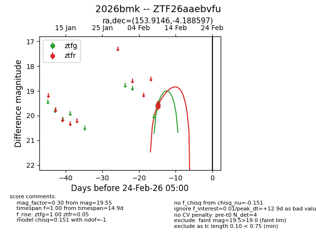
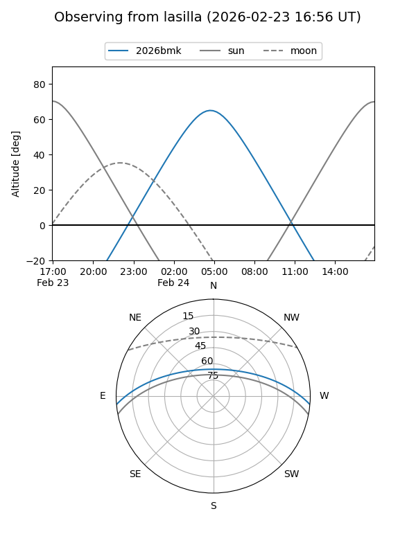
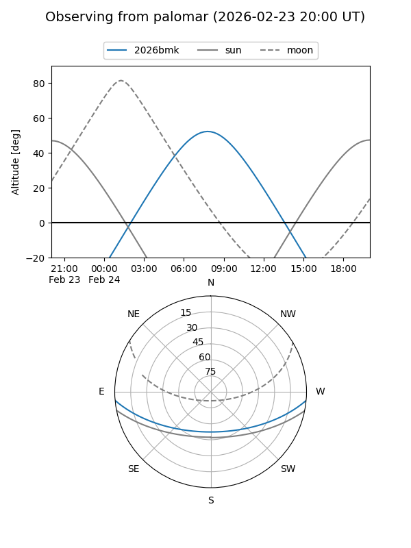

2026bmk
Target 2026bmk at 2026-02-24 09:08
Aliases and brokers:
FINK: link
Lasair: link
ALeRCE: link
TNS: link
YSE: link
alt names
ZTF26aaebvfu (ztf,fink_ztf)
2026bmk (tns,yse)
Coordinates:
equatorial (ra, dec) = 153.9146,-4.18860
equatorial (HMS+DMS) = 10:15:39.51,-04:11:18.95
galactic (l, b) = (246.6707,+41.07420)
Flags:
Photometry:
last ztfg=19.55, ztfr=19.63
2 ztfg, 2 ztfr detections
Lightcurve

Visibility


Additional plots